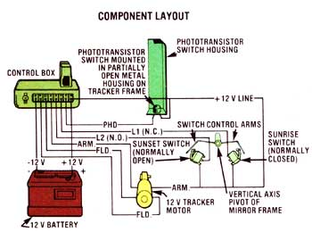

FOR ILLUSTRATION PURPOSES, THE PERFBOARD SHOWN HERE IS TRANSPARENT AND THE COMPONENTS ON IT ARE SEPARATED MORE THAN THEY WOULD NORMALLY BE. YOU MAY ARRANGE THE COMPONENTS IN A TIGHTER PATTERN ON YOUR OWN PERFBOARD. IN ADDITION, THE TERMINAL PEGS ARE REMOVED IN THIS ILLUSTRATION TO CLEARLY SHOW WHERE THE LEAD WIRES ARE CONNECTED. IN PRACTICE, EACH LEAD WIRE WILL REQUIRE A TERMINAL PEG TO HOLD THE COMPONENTS SECURELY TO THE PERFBOARD ... AS SHOWN IN THE LOWER LEFT CORNER OF THE PERFBOARD IN THIS ILLUSTRATION.